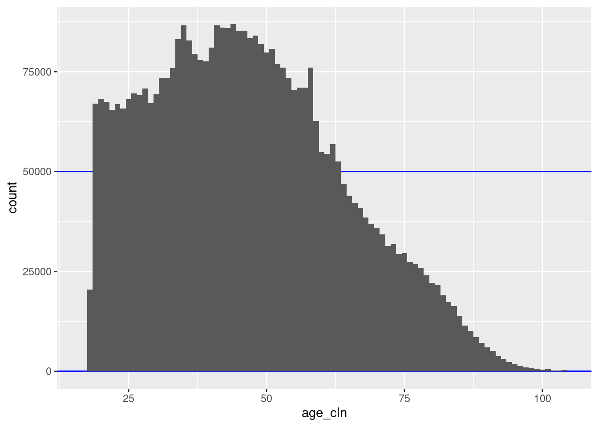
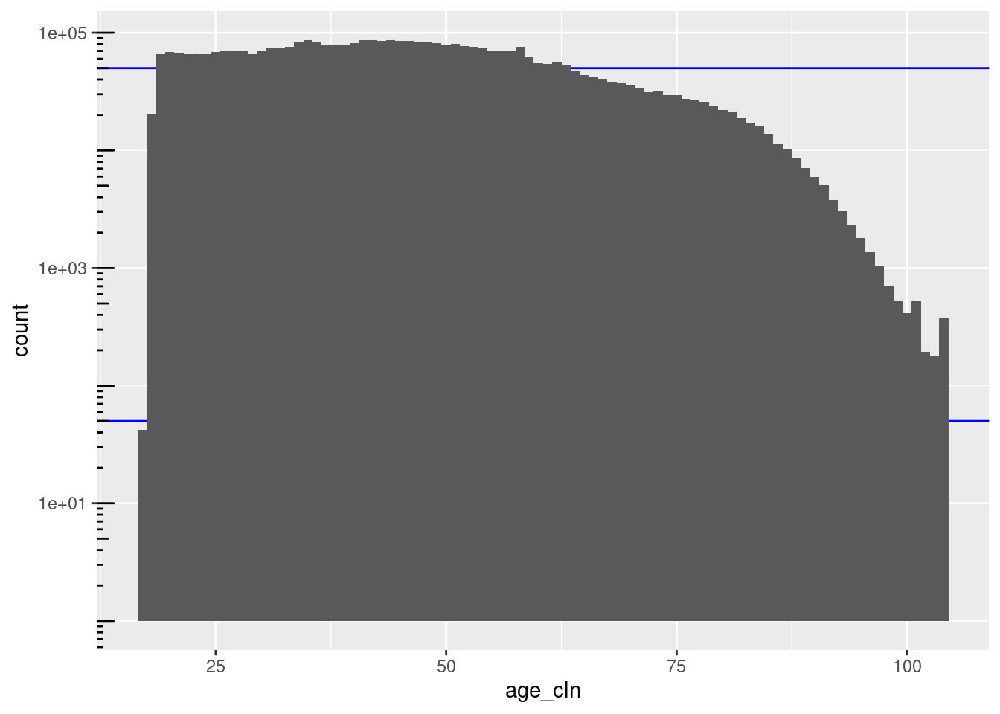
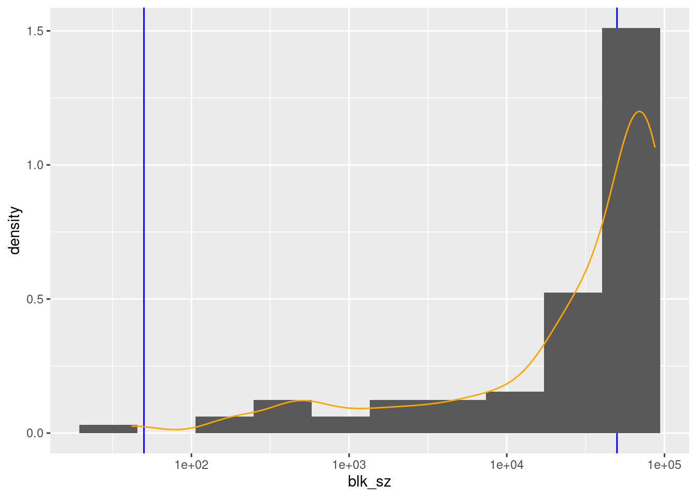
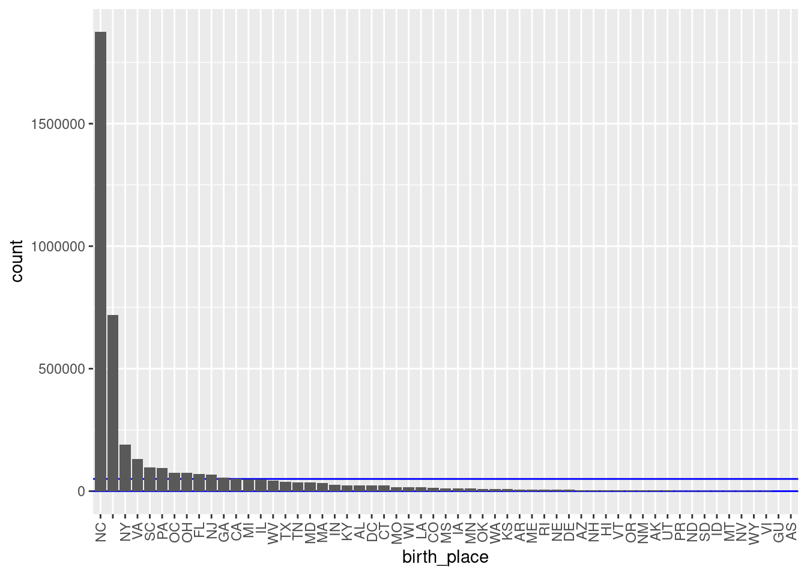
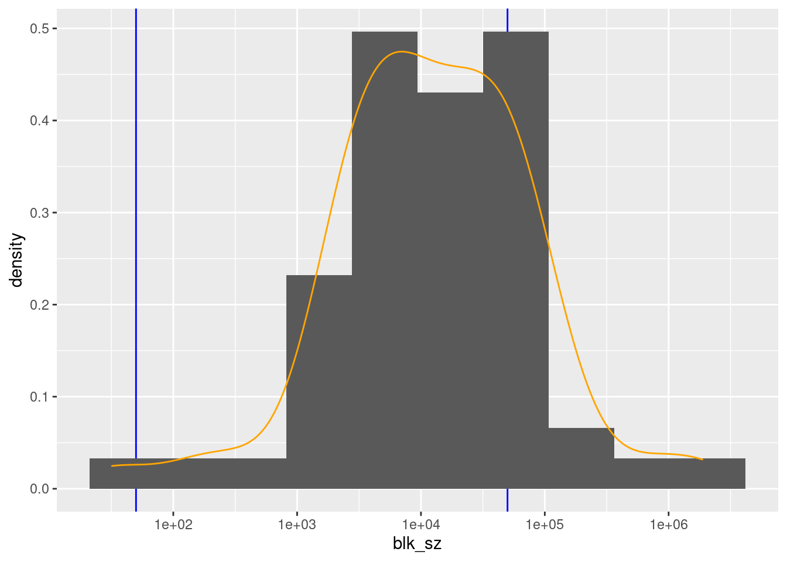
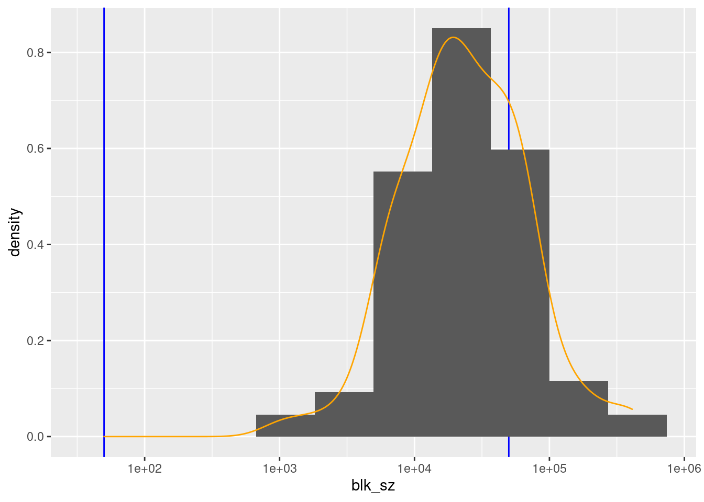
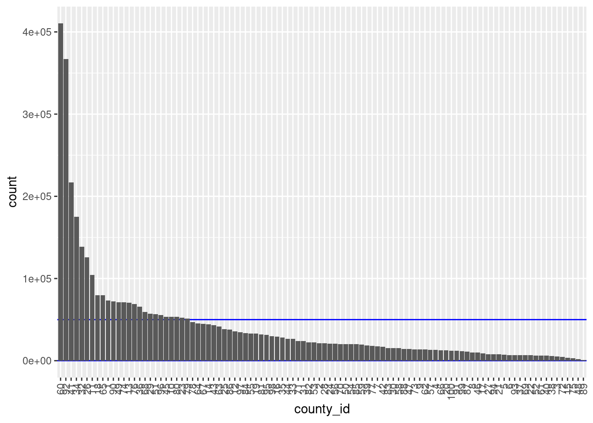
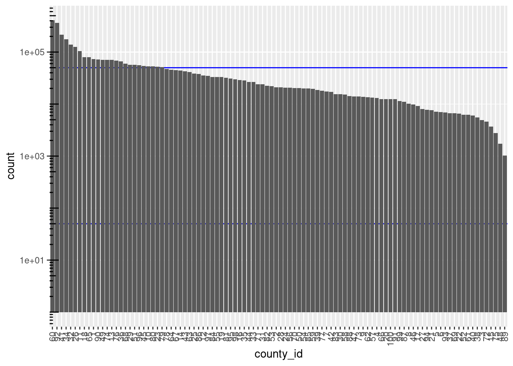

Last updated: 2021-01-24
Checks: 7 0
Knit directory:
fa_sim_cal/
This reproducible R Markdown analysis was created with workflowr (version 1.6.2). The Checks tab describes the reproducibility checks that were applied when the results were created. The Past versions tab lists the development history.
Great! Since the R Markdown file has been committed to the Git repository, you know the exact version of the code that produced these results.
Great job! The global environment was empty. Objects defined in the global environment can affect the analysis in your R Markdown file in unknown ways. For reproduciblity it’s best to always run the code in an empty environment.
The command set.seed(20201104) was run prior to running the code in the R Markdown file.
Setting a seed ensures that any results that rely on randomness, e.g.
subsampling or permutations, are reproducible.
Great job! Recording the operating system, R version, and package versions is critical for reproducibility.
Nice! There were no cached chunks for this analysis, so you can be confident that you successfully produced the results during this run.
Great job! Using relative paths to the files within your workflowr project makes it easier to run your code on other machines.
Great! You are using Git for version control. Tracking code development and connecting the code version to the results is critical for reproducibility.
The results in this page were generated with repository version d0307f5. See the Past versions tab to see a history of the changes made to the R Markdown and HTML files.
Note that you need to be careful to ensure that all relevant files for the
analysis have been committed to Git prior to generating the results (you can
use wflow_publish or wflow_git_commit). workflowr only
checks the R Markdown file, but you know if there are other scripts or data
files that it depends on. Below is the status of the Git repository when the
results were generated:
Ignored files:
Ignored: .Rhistory
Ignored: .Rproj.user/
Ignored: .tresorit/
Ignored: data/VR_20051125.txt.xz
Ignored: output/ent_cln.fst
Ignored: output/ent_raw.fst
Ignored: renv/library/
Ignored: renv/staging/
Note that any generated files, e.g. HTML, png, CSS, etc., are not included in this status report because it is ok for generated content to have uncommitted changes.
These are the previous versions of the repository in which changes were made
to the R Markdown (analysis/02-1_char_block_vars.Rmd) and HTML (docs/02-1_char_block_vars.html)
files. If you’ve configured a remote Git repository (see
?wflow_git_remote), click on the hyperlinks in the table below to
view the files as they were in that past version.
| File | Version | Author | Date | Message |
|---|---|---|---|---|
| Rmd | d0307f5 | Ross Gayler | 2021-01-24 | Add 02-1 char block vars |
| Rmd | 6df8db7 | Ross Gayler | 2021-01-24 | End of day |
# Set up the project environment, because each Rmd file knits in a new R session
# so doesn't get the project setup from .Rprofile
# Project setup
library(here)
source(here::here("code", "setup_project.R"))── Attaching packages ─────────────────────────────────────── tidyverse 1.3.0 ──✓ ggplot2 3.3.3 ✓ purrr 0.3.4
✓ tibble 3.0.5 ✓ dplyr 1.0.3
✓ tidyr 1.1.2 ✓ stringr 1.4.0
✓ readr 1.4.0 ✓ forcats 0.5.0── Conflicts ────────────────────────────────────────── tidyverse_conflicts() ──
x dplyr::filter() masks stats::filter()
x dplyr::lag() masks stats::lag()# Extra set up for the 02*.Rmd notebooks
# source(here::here("code", "setup_02.R"))
# Extra set up for this notebook
# ???
# start the execution time clock
tictoc::tic("Computation time (excl. render)")This notebook (02-1_char_block_vars) characterises the potential
blocking variables.
Conceptually, the compatibility of the query record is calculated with respect to every dictionary record. Each compatibility calculation might be computationally expensive, meaning that calculation could be infeasibly expensive for large dictionaries. This is especially the case if the identity query is an online, real-time transaction that requires a very rapid response.
For a large dictionary of person records it is generally the case that the vast majority of records have a very low compatibility with the query record. That is, the vast majority of dictionary records have a very low probability of being a correct match to the query record. If we had a computationally cheap method for identifying these records we could ignore them and only calculate the compatibility for the small set of records with a reasonable probability of being a correct match to the query record.
A common approach to this issue is to use blocking variables. A blocking variable is a variable that exists in the dictionary and query records, which takes a large number of values, such that the number of dictionary records in each block is relatively small, and the correctly matching dictionary record has the same blocking value as the query record (with very high probability).
Any entity should have the same blocking value in the corresponding dictionary and query records. Obviously this is not necessarily the case if the record observation process is noisy for that variable. Consequently, we should choose blocking variables that we expect to be reliably observed in the dictionary and query records. There are techniques for compensating for noisy blocking variables but they will not be considered in this project.
There is room for pragmatic considerations in the choice of blocking variables. For example, we might expect there to be some errors in date of birth. However, in some high-stakes settings (e.g transferring ownership of a very valuable asset) we might insist that date of birth match exactly even though we realise that this will cause an increased level of incorrect non-matches. Given the commitment to exact match of data of birth we could then use date of birth as a blocking variable.
Blocking variables can be composite variables, that is, the product of several variables. A person’s gender would not normally be useful as a blocking variable because it would only create a small number of large blocks. However, it could usefully be combined with another variable, such as date of birth, to yield roughly twice as many blocks of half the size.
In this project we are not addressing issues of speed of response, so could ignore blocking. However, we will use blocking for the practical reason of reducing the computational cost of the calculations. This may also expose issues which will turn up when blocking is used in real applications.
We could reduce the computational cost by taking random samples of records (effectively using random numbers to define blocks). However this would lead to relatively uniform block sizes and the contents of all blocks being relatively similar. When real properties of the entities are used as blocking variables it means that the records in the same block are necessarily more similar to each other in that attribute. This may also induce greater variation in the block sizes.
The demographic variables sex, age, birth_place, and the
administrative variable county_id will be considered for use as
blocking variables in this project. This is not a claim that they are
good blocking variables or that they should be used as blocking
variables in any practical application. We are using blocking variables
in this project only for the practical effect of reducing computational
effort and to look for issues that may arise as a consequence of using
blocking in combination with the entity resolution approach which is the
focus of this project.
This notebook characterises those four variables with respect to their properties that are relevant to their use as potential blocking variables. The final selection and use of the blocking variables will occur later in the project.
The distribution of block sizes is important in a practical setting because it directly controls the computational cost. Large blocks are computationally expensive and prevent real-time response, so should be avoided. However, for the current project real-time response is not relevant.
As this is a research project, we are not forced to use every block that is induced by a blocking variable. We can select the blocks we use to meet our requirements. The following issues are relevant to the selection of blocks:
We want the largest blocks we select to be as large as possible (because in statistical modelling, more observations is generally better), subject to the constraint of not being so large as to be computationally impractical.
We want as wide a range of block sizes as possible because properties of the proposed entity resolution algorithm may vary as a function of block size.
We don’t want the smallest blocks to be too small because we will be looking at the frequencies of values (e.g. names) calculated within the block. Those calculations probably become less meaningful as the blocks get smaller.
We want there to be a reasonable number of blocks of approximately every size that we use. This allows the analyses to be replicated over blocks to allow estimation of the variability of the results.
Unfortunately, we don’t currently know what the upper and lower bounds on practical block size should be for this project. I will pull some numbers from the air and say the usable block sizes should be between 50 and 50,000 records.
If any blocks are too small we can pool them to make them a useful size.
At this stage we should be cataloguing the distributions of block sizes to allow us to make informed choices later.
Read the usable data. Remember that this consists of only the ACTIVE & VERIFIED records.
# Show the entity data file location
# This is set in code/file_paths.R
fs::path_file(f_entity_cln_fst)[1] "ent_cln.fst"# get entity data
d <- fst::read_fst(
f_entity_cln_fst,
columns = c("sex", "age_cln", "age_cln_miss", "birth_place", "county_id")
) %>%
tibble::as_tibble()
dim(d)[1] 4099699 5For each potential blocking variable, look at the distribution of values, and comment on any properties that variable may have when used for blocking.
# count the records in each level
x <- d %>%
dplyr::count(sex, sort = TRUE) %>%
dplyr::mutate(p = n / sum(n)) # convert count to probability
# number of levels
nrow(x)[1] 3# show the counts at each level
x %>%
knitr::kable(digits = 3, format.args = list(big.mark = ","))| sex | n | p |
|---|---|---|
| FEMALE | 2,239,888 | 0.546 |
| MALE | 1,844,220 | 0.450 |
| UNK | 15,591 | 0.004 |
Sex would not be used as a blocking variable in isolation because it has only 3 levels.
Sex could be used in combination with other blocking variables. The effect would to roughly double the number of blocks and halve the block size.
If used in practice the small UNK group would have to be dealt with. For example, if it is genuinely “unknown” then the UNK records should probably be added to both the FEMALE and MALE blocks, which would mean that sex is no longer a partition of the records.
Blocking on sex is likely to induce greater within-block homogeneity of first and (to a lesser extent) middle names, because some first names are relatively specific to a gender.
Look at missingness first.
table(d$age_cln_miss)
FALSE TRUE
4068644 31055 table(d$age_cln_miss) %>% prop.table() %>% round(3)
FALSE TRUE
0.992 0.008 For convenience, we will probably end up excluding records with missing age. So look at the distributions after excluding records with age missing.
# arbitrary lower and upper bound on useful block size
blk_sz_min <- 50
blk_sz_max <- 50e3
# distribution of age (linear count)
d %>%
dplyr::filter(!age_cln_miss) %>%
ggplot() +
geom_hline(yintercept = c(blk_sz_min, blk_sz_max), colour = "blue") +
geom_histogram(aes(x = age_cln), binwidth = 1)
# distribution of age (log count)
d %>%
dplyr::filter(!age_cln_miss) %>%
ggplot() +
geom_hline(yintercept = c(blk_sz_min, blk_sz_max), colour = "blue") +
geom_histogram(aes(x = age_cln), binwidth = 1) +
scale_y_log10() + annotation_logticks(sides = "l")
# count the records in each level/block
d_blk <- d %>%
dplyr::filter(!age_cln_miss) %>%
dplyr::count(age_cln, name = "blk_sz", sort = TRUE)
# number of blocks
nrow(d_blk)[1] 88# number of blocks in "useful" size range
d_blk$blk_sz %>% dplyr::between(blk_sz_min, blk_sz_max) %>% sum()[1] 42# distribution of block sizes
summary(d_blk$blk_sz) Min. 1st Qu. Median Mean 3rd Qu. Max.
42 17047 53492 46235 74110 86956 d_blk %>%
ggplot(aes(x = blk_sz)) +
geom_vline(xintercept = c(blk_sz_min, blk_sz_max), colour = "blue") +
geom_histogram(aes(y = ..density..), bins = 10) +
geom_density(colour = "orange") +
scale_x_log10()
There are 88 unique nonmissing levels (blocks).
There are 42 blocks with sizes in the “useful” range.
The blocks corresponding to ages 18 to 63 inclusive are larger than the “useful” range.
In a real application we would likely have date of birth rather than age. This would give many more, much smaller blocks.
Age could be used in combination with other blocking variables, e,g, sex.
If used in practice the “missing” group (age = 0) would have to be dealt with. For example, if it is genuinely “unknown” then the 0 records should probably be added to each of the other blocks.
Blocking on age is likely to induce greater within-block homogeneity of first and (to a lesser extent) middle names, because the fashionability of given names varies over time.
It is possible that blocking on age might induce greater within-block homogeneity of last names if, for example, there is time-varying immigration of groups with distinctive family names.
Look at missingness first.
table(d$birth_place == "")
FALSE TRUE
3381052 718647 table(d$birth_place == "") %>% prop.table() %>% round(3)
FALSE TRUE
0.825 0.175 This is really too large a fraction of records to exclude for convenience. Do not exclude records with missing birth place from the following analyses so that we can get a better view of their importance.
# distribution of birth place
d %>%
dplyr::mutate(birth_place = forcats::fct_infreq(birth_place)) %>%
ggplot() +
geom_hline(yintercept = c(blk_sz_min, blk_sz_max), colour = "blue") +
geom_bar(aes(x = birth_place)) +
theme(axis.text.x = element_text(angle = 90, hjust = 1, vjust = 0.5))
# count the records in each level/block
d_blk <- d %>% dplyr::count(birth_place, name = "blk_sz", sort = TRUE)
# number of blocks
nrow(d_blk)[1] 57# number of blocks in "useful" size range
d_blk$blk_sz %>% dplyr::between(blk_sz_min, blk_sz_max) %>% sum()[1] 44# distribution of block sizes
summary(d_blk$blk_sz) Min. 1st Qu. Median Mean 3rd Qu. Max.
32 3783 12047 71924 42143 1875088 d_blk %>%
ggplot(aes(x = blk_sz)) +
geom_vline(xintercept = c(blk_sz_min, blk_sz_max), colour = "blue") +
geom_histogram(aes(y = ..density..), bins = 10) +
geom_density(colour = "orange") +
scale_x_log10()
There are 57 unique levels.
There are 44 blocks with sizes in the “useful” range.
We could exclude the North Carolina block from experiments, but that makes me uneasy as a source of systematic bias. I would prefer to use data that is closer to being representative of the NCVR data.
If used in practice the “missing” group would have to be dealt with. For example, if it is genuinely “unknown” then those records should probably be added to each of the other blocks.
From an earlier notebook we know that county ID is never missing.
# distribution of county ID
d %>%
dplyr::mutate(county_id = forcats::fct_infreq(county_id)) %>%
ggplot() +
geom_hline(yintercept = c(blk_sz_min, blk_sz_max), colour = "blue") +
geom_bar(aes(x = county_id)) +
theme(axis.text.x = element_text(angle = 90, hjust = 1, vjust = 0.5))d %>%
dplyr::mutate(county_id = forcats::fct_infreq(county_id)) %>%
ggplot() +
geom_hline(yintercept = c(blk_sz_min, blk_sz_max), colour = "blue") +
geom_bar(aes(x = county_id)) +
scale_y_log10() + annotation_logticks(sides = "l") +
theme(axis.text.x = element_text(angle = 90, hjust = 1, vjust = 0.5))# count the records in each level/block
d_blk <- d %>% dplyr::count(county_id, name = "blk_sz", sort = TRUE)
# number of blocks
nrow(d_blk)[1] 100# number of blocks in "useful" size range
d_blk$blk_sz %>% dplyr::between(blk_sz_min, blk_sz_max) %>% sum()[1] 75# distribution of block sizes
summary(d_blk$blk_sz) Min. 1st Qu. Median Mean 3rd Qu. Max.
1027 12374 21132 40997 48026 410483 d_blk %>%
ggplot(aes(x = blk_sz)) +
geom_vline(xintercept = c(blk_sz_min, blk_sz_max), colour = "blue") +
geom_histogram(aes(y = ..density..), bins = 10) +
geom_density(colour = "orange") +
scale_x_log10()
There are 100 unique levels (blocks).
County ID is never missing.
There are 75 blocks with sizes in the “useful” range.
Blocking on county ID might induce greater within-block homogeneity of first and last names if, for example, family members tend to live near each other and certain names are popular within that family.
Look at the distributions of block sizes for all reasonable combinations of potential blocking variables.
# Calculate all the block sizes for each combination of blocking variables.
# For only 6 combinations I will manually enumerate them.
d_blk <- dplyr::bind_rows(
list(
sex_age_cnty = dplyr::count( dplyr::filter(d, sex != "UNK" & !age_cln_miss),
sex, age_cln, county_id, name = "blk_sz"),
sex_age = dplyr::count( dplyr::filter(d, sex != "UNK" & !age_cln_miss),
sex, age_cln , name = "blk_sz"),
sex_cnty = dplyr::count( dplyr::filter(d, sex != "UNK"),
sex, county_id, name = "blk_sz"),
age_cnty = dplyr::count( dplyr::filter(d, !age_cln_miss),
age_cln, county_id, name = "blk_sz"),
age = dplyr::count( dplyr::filter(d, !age_cln_miss),
age_cln , name = "blk_sz"),
cnty = dplyr::count( d,
county_id, name = "blk_sz")
),
.id = "blk_vars"
) %>%
dplyr::mutate(
blk_vars = forcats::fct_infreq(blk_vars)
)
d_blk %>%
ggplot(aes(x = blk_vars, y = blk_sz)) +
geom_hline(yintercept = c(blk_sz_min, blk_sz_max), colour = "blue") +
geom_jitter(width = 0.4, alpha = 0.1) +
geom_boxplot(outlier.shape = NA, colour = "red", alpha = 0.0) +
scale_y_log10(n.breaks = 7) + annotation_logticks(sides = "l") +
theme(panel.grid.major.x = element_blank(), panel.grid.minor.y = element_line())
d_blk %>%
ggplot(aes(x = blk_sz)) +
geom_vline(xintercept = c(blk_sz_min, blk_sz_max), colour = "blue") +
geom_histogram(aes(y = ..density..), bins = 10) +
geom_density(colour = "orange") +
scale_x_log10() +
facet_grid(rows = vars(blk_vars))
# Characterise the blocking schemes
d_blk_summ <- d_blk %>%
dplyr::group_by(blk_vars) %>%
dplyr::summarise(
n_blk = n(),
n_rec = sum(blk_sz),
min_blk_sz = min(blk_sz),
max_blk_sz = max(blk_sz),
n_blk_low = sum(blk_sz < blk_sz_min),
p_blk_low = (n_blk_low / n_blk) %>% round(2),
n_rec_low = sum(blk_sz[blk_sz < blk_sz_min]),
p_rec_low = (n_rec_low / n_rec) %>% round(2),
n_blk_high = sum(blk_sz > blk_sz_max),
p_blk_high = (n_blk_high / n_blk) %>% round(2),
n_rec_high = sum(blk_sz[blk_sz > blk_sz_max]),
p_rec_high = (n_rec_high / n_rec) %>% round(2),
n_blk_useful = sum(between(blk_sz, blk_sz_min, blk_sz_max)),
p_blk_useful = (n_blk_useful / n_blk) %>% round(2),
n_rec_useful = sum(blk_sz[between(blk_sz, blk_sz_min, blk_sz_max)]),
p_rec_useful = (n_rec_useful / n_rec) %>% round(2),
gm_useful_blk_sz = blk_sz[between(blk_sz, blk_sz_min, blk_sz_max)] %>%
log() %>% mean() %>% exp() %>% round() # geometric mean of useful block sizes
)
# number of blocks
d_blk_summ %>%
dplyr::select(blk_vars, n_blk, n_blk_low, n_blk_high, n_blk_useful) %>%
knitr::kable(format.args = list(big.mark = ","))| blk_vars | n_blk | n_blk_low | n_blk_high | n_blk_useful |
|---|---|---|---|---|
| sex_age_cnty | 16,710 | 5,127 | 0 | 11,583 |
| age_cnty | 8,539 | 1,759 | 0 | 6,780 |
| sex_cnty | 200 | 0 | 13 | 187 |
| sex_age | 176 | 4 | 0 | 172 |
| cnty | 100 | 0 | 25 | 75 |
| age | 88 | 1 | 45 | 42 |
# proportion of blocks
d_blk_summ %>%
dplyr::select(blk_vars, n_blk, p_blk_low, p_blk_high, p_blk_useful) %>%
knitr::kable(format.args = list(big.mark = ","))| blk_vars | n_blk | p_blk_low | p_blk_high | p_blk_useful |
|---|---|---|---|---|
| sex_age_cnty | 16,710 | 0.31 | 0.00 | 0.69 |
| age_cnty | 8,539 | 0.21 | 0.00 | 0.79 |
| sex_cnty | 200 | 0.00 | 0.06 | 0.94 |
| sex_age | 176 | 0.02 | 0.00 | 0.98 |
| cnty | 100 | 0.00 | 0.25 | 0.75 |
| age | 88 | 0.01 | 0.51 | 0.48 |
# number of records
d_blk_summ %>%
dplyr::select(blk_vars, n_rec_low, n_rec_high, n_rec_useful) %>%
knitr::kable(format.args = list(big.mark = ","))| blk_vars | n_rec_low | n_rec_high | n_rec_useful |
|---|---|---|---|
| sex_age_cnty | 99,356 | 0 | 3,953,708 |
| age_cnty | 28,878 | 0 | 4,039,766 |
| sex_cnty | 0 | 1,487,194 | 2,596,914 |
| sex_age | 132 | 0 | 4,052,932 |
| cnty | 0 | 2,684,300 | 1,415,399 |
| age | 42 | 3,327,859 | 740,743 |
# proportion of records
d_blk_summ %>%
dplyr::select(blk_vars, p_rec_low, p_rec_high, p_rec_useful) %>%
knitr::kable(format.args = list(big.mark = ","))| blk_vars | p_rec_low | p_rec_high | p_rec_useful |
|---|---|---|---|
| sex_age_cnty | 0.02 | 0.00 | 0.98 |
| age_cnty | 0.01 | 0.00 | 0.99 |
| sex_cnty | 0.00 | 0.36 | 0.64 |
| sex_age | 0.00 | 0.00 | 1.00 |
| cnty | 0.00 | 0.65 | 0.35 |
| age | 0.00 | 0.82 | 0.18 |
# block size
d_blk_summ %>%
dplyr::select(blk_vars, min_blk_sz, max_blk_sz, gm_useful_blk_sz) %>%
knitr::kable(format.args = list(big.mark = ","))| blk_vars | min_blk_sz | max_blk_sz | gm_useful_blk_sz |
|---|---|---|---|
| sex_age_cnty | 1 | 5,739 | 205 |
| age_cnty | 1 | 10,626 | 321 |
| sex_cnty | 435 | 226,207 | 9,744 |
| sex_age | 19 | 47,190 | 12,822 |
| cnty | 1,027 | 410,483 | 14,714 |
| age | 42 | 86,956 | 7,779 |
county, age, and (sex, age) have too many blocks/records in the higher than useful block size range.
(sex, age) has 4 blocks with 132 records below the lower bound of the useful block size range.
(sex, age, county) and (age, county) have too few blocks/records in the useful high block size range.
The largest block sizes for (sex, age, county) and (age, county) are quite small relative to the upper limit of the useful block size range.
(sex, age, county) and (age, county) have too many blocks/records in the low block size range.
The entire distributions of block sizes for (sex, age, county) and (age, county) could be shifted upwards by aggressive pooling of levels.
Conclusion
My tentative conclusion is that (sex, age), (age, county), and (sex, age, county) might be useful as blocking variables if pooling can be used to bring the block sizes into the useful range.
Computation time (excl. render): 18.677 sec elapsed
sessionInfo()R version 4.0.3 (2020-10-10)
Platform: x86_64-pc-linux-gnu (64-bit)
Running under: Ubuntu 20.10
Matrix products: default
BLAS: /usr/lib/x86_64-linux-gnu/blas/libblas.so.3.9.0
LAPACK: /usr/lib/x86_64-linux-gnu/lapack/liblapack.so.3.9.0
locale:
[1] LC_CTYPE=en_AU.UTF-8 LC_NUMERIC=C
[3] LC_TIME=en_AU.UTF-8 LC_COLLATE=en_AU.UTF-8
[5] LC_MONETARY=en_AU.UTF-8 LC_MESSAGES=en_AU.UTF-8
[7] LC_PAPER=en_AU.UTF-8 LC_NAME=C
[9] LC_ADDRESS=C LC_TELEPHONE=C
[11] LC_MEASUREMENT=en_AU.UTF-8 LC_IDENTIFICATION=C
attached base packages:
[1] stats graphics grDevices datasets utils methods base
other attached packages:
[1] fst_0.9.4 fs_1.5.0 forcats_0.5.0 stringr_1.4.0
[5] dplyr_1.0.3 purrr_0.3.4 readr_1.4.0 tidyr_1.1.2
[9] tibble_3.0.5 ggplot2_3.3.3 tidyverse_1.3.0 tictoc_1.0
[13] here_1.0.1 workflowr_1.6.2
loaded via a namespace (and not attached):
[1] Rcpp_1.0.6 lubridate_1.7.9.2 assertthat_0.2.1 rprojroot_2.0.2
[5] digest_0.6.27 R6_2.5.0 cellranger_1.1.0 backports_1.2.1
[9] reprex_0.3.0 evaluate_0.14 highr_0.8 httr_1.4.2
[13] pillar_1.4.7 rlang_0.4.10 readxl_1.3.1 rstudioapi_0.13
[17] data.table_1.13.6 whisker_0.4 rmarkdown_2.6 labeling_0.4.2
[21] munsell_0.5.0 broom_0.7.3 compiler_4.0.3 httpuv_1.5.5
[25] modelr_0.1.8 xfun_0.20 pkgconfig_2.0.3 htmltools_0.5.1.1
[29] tidyselect_1.1.0 bookdown_0.21 fansi_0.4.2 crayon_1.3.4
[33] dbplyr_2.0.0 withr_2.4.0 later_1.1.0.1 grid_4.0.3
[37] jsonlite_1.7.2 gtable_0.3.0 lifecycle_0.2.0 DBI_1.1.1
[41] git2r_0.28.0 magrittr_2.0.1 scales_1.1.1 cli_2.2.0
[45] stringi_1.5.3 farver_2.0.3 renv_0.12.5 promises_1.1.1
[49] xml2_1.3.2 ellipsis_0.3.1 generics_0.1.0 vctrs_0.3.6
[53] tools_4.0.3 glue_1.4.2 hms_1.0.0 parallel_4.0.3
[57] yaml_2.2.1 colorspace_2.0-0 rvest_0.3.6 knitr_1.30
[61] haven_2.3.1